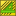

|
| Emplacement du menu |
|---|
| TechDraw → Hachures géométriques |
| Ateliers |
| TechDraw |
| Raccourci par défaut |
| Voir aussi |
| Hachurage TechDraw |
Description
L'outil Hachures géométriques remplit une région par des lignes géométriques selon un motif basé sur une spécification de hachures AutoDesk PAT. Un petit ensemble de modèles d'échantillons est disponible dans ".../Mod/TechDraw/PAT/FCPAT.pat".
Comment faire
- Sélectionnez une région fermée dans une vue. La région deviendra verte.
- Appuyez sur le bouton  Hachures géométriques
- une boîte de dialogue s'ouvre où vous pouvez sélectionner votre motif, une échelle pour le motif et une épaisseur de ligne.
- Vous devrez peut-être appuyer sur recalculer
 et/ou "réanimer" la vue parente pour obtenir la mise à jour du motif.
et/ou "réanimer" la vue parente pour obtenir la mise à jour du motif.
{kind=link}
Options
Aucune.
Propriétés
- DONNÉESSource: La vue et la région qui va recevoir le motif de hachures.
- DONNÉESFile Pattern: l'emplacement du fichier PAT à utiliser.
- DONNÉESName Pattern: le nom de la spécification PAT dans File Pattern.
- DONNÉESScale Pattern: l'échelle à appliquer au motif (doit être> 0.0).
- VUEWeight Pattern: l'épaisseur des lignes de motif.
- VUEColor Pattern: couleur des lignes de motif.
Script
Hatch peut être ajouté aux zones dans Views en utilisant le code Python.
hatch = FreeCAD.ActiveDocument.addObject('TechDraw::DrawGeomHatch','GeomHatch')
hatch.Source = (view1,["Face0"])
hatch.FilePattern = "path/to/myPATfile.pat"
hatch.NamePattern = "Diamond"
rc = page.addView(hatch)
Notes
- Notez que les motifs de hachures géométriques sont inclus lorsqu'une page de dessin est enregistrée en tant que fichier Svg.